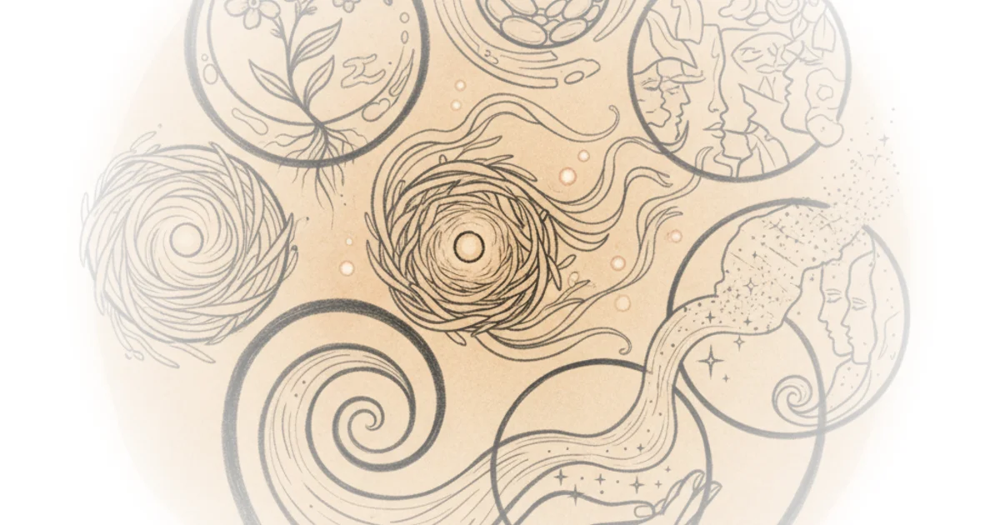

In a cultural landscape often saturated with productivity hacks and optimized routines, this piece from Two Truths offers a radical alternative: the deliberate preservation of the mundane. The editors argue that the antidote to the disorienting speed of modern parenting isn't a better schedule, but a more tactile, intentional record of the ordinary. By reframing "junk" as history and "microjoys" as essential data, the article posits that memory collection is an act of resistance against the erosion of time.
The Architecture of Memory
Two Truths reports that the feeling of time slipping away is a near-universal parental experience, noting, "As parents, we are helpless bystanders to the supersonic speed of passing time." The piece suggests that without intervention, this awareness easily curdles into melancholy, causing caregivers to miss the present while grieving the past. The proposed solution is not a single method, but a "journaling ecosystem" designed to capture different layers of existence. The editors note that this approach helps parents "spend my days more mindfully and collect more memories to be saved for posterity."

The core of the argument rests on the idea that memory is not just mental, but physical. The article distinguishes between digital storage and tactile artifacts, arguing that holding a physical object anchors the memory more deeply. "It's a piece of priceless history I can hold in my hands," the piece asserts, describing how receipts, bandages, and candy wrappers are transformed from trash into a "beautiful journal spread that gives an authentic glimpse of what September looked like for us." This reframing of everyday debris is the piece's most compelling move; it elevates the trivial to the historical, suggesting that the texture of a life is found in its smallest, most discarded details.
Alone, these pieces are trash; together, they create a beautiful journal spread that gives an authentic glimpse of what September looked like for us.
Capturing the Fleeting and the Mundane
Beyond the physical collection of objects, the article introduces the concept of "microjoy" journaling as a cognitive tool to shift focus from stress to gratitude. Two Truths observes that "the more I look for joy, the more joy I find and appreciate," suggesting a feedback loop where the act of recording happiness amplifies the experience itself. This technique is presented as a direct counter to the feeling that time is vanishing. "I don't feel like time is slipping away from me anymore because I've preserved so many memories to look back on," the author explains.
Complementing this is the "life log," described as a "reverse planner" that documents the unremarkable days that often blur together. The editors argue that these unmemorable moments are actually the substance of a life. "All those unmemorable, unremarkable days that blur into each other are what makes up our lives—and I love being able to look back on mine." This is a crucial distinction; while society often values only the milestones, this approach validates the daily grind as worthy of preservation. Critics might note that maintaining multiple journals requires significant time and emotional energy, potentially adding to the burden of an already overwhelmed parent. However, the piece counters this by emphasizing that even small, sporadic entries—like writing in a legacy journal "one or two questions per month, max"—can yield profound results over time.
Building a Legacy for the Future
The final layer of this ecosystem focuses on intergenerational connection. The article details the use of "legacy journals" to answer prompts about one's own life story, creating a resource for children that the author wishes her own grandparents had provided. "There are so many questions I wish I had asked them when we still had time together," the editors reflect, framing the journal as a bridge across generations. Similarly, "childhood history journals" are positioned not as baby books, but as a "bird's eye glimpse into growth, major milestones, and special memories" that spans from pregnancy to adulthood.
The inclusion of "commonplace notebooks" adds an intellectual dimension, allowing parents to compile wisdom, quotes, and facts to "impart on them." This transforms the act of parenting from a series of daily tasks into a curated transmission of culture and values. The piece describes this as "an ongoing gift that I'm building," suggesting that the value of these journals compounds over decades.
Bottom Line
The strongest element of this coverage is its ability to democratize the concept of history, arguing that a family's past is not defined by grand events but by the accumulation of small, tangible moments. Its biggest vulnerability lies in the assumption that all parents have the bandwidth to curate such an ecosystem, though the piece wisely suggests that even minimal effort yields value. For busy readers, the takeaway is clear: the most effective way to combat the anxiety of time passing is not to try to stop it, but to physically hold onto it.